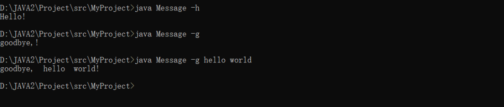
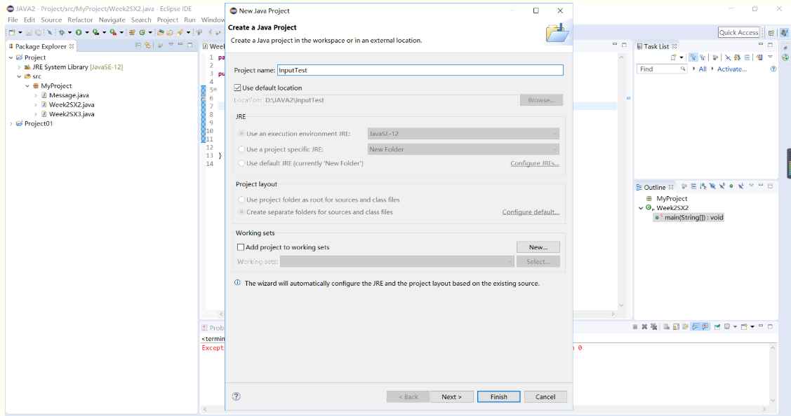
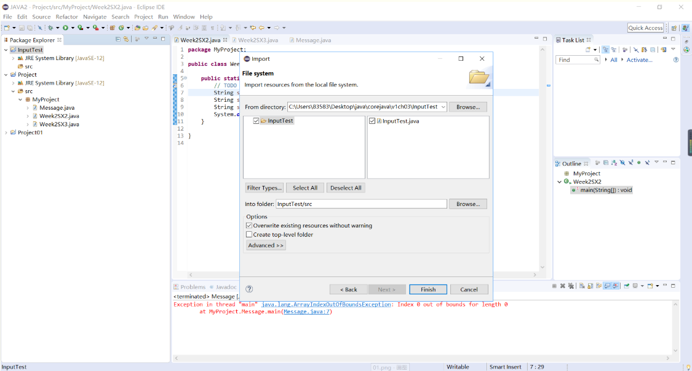
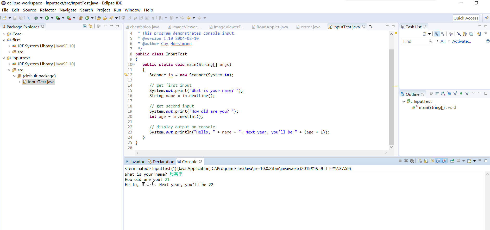
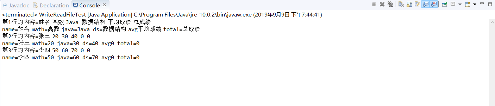
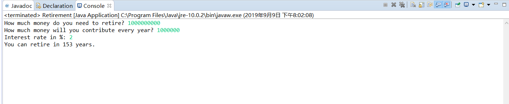
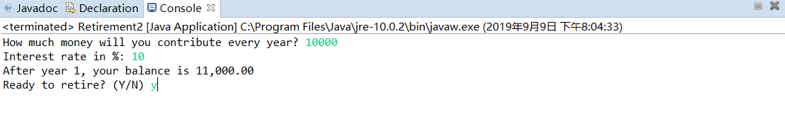
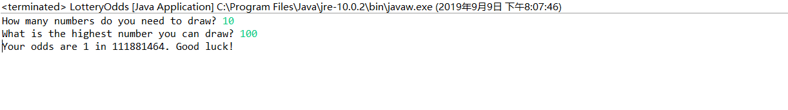

原文连接:https://www.cnblogs.com/dlzyj/p/11489332.html
|
项目 |
内容 |
|
这个作业属于哪个课程 |
https://www.cnblogs.com/nwnu-daizh/ |
|
这个作业的要求在哪里 |
|
|
作业学习目标 |
|
第一部分：结合Java和C基础语法的异同比较，总结本周理论知识 ：
1.
1.1标识符
由字母，下划线，美元符号，数字组成（首字母不能是字母）；
1.2关键字
class、public、try、catch、import。。。（仅举例于c语言不相同的）；
1.3解释
“//”进行行注释；
“/* */”进行块注释；
“/** */”可用来自动生成文档的注释；
2.数据类型
| 整型 | 浮点类型 | char类型 | Unicode和char类型 | boolean类型 |
| 用来表示没有小数部分的数值，它允许是负数 | 用来表示有小数的部分 | 原来用来表示单个字符 | 用来判定逻辑条件 | |
|
int 4字节 short 2字节 long 8字节 byte 1字节 |
float 4字节 double 8字节 （!正无穷大！负无穷大！NaN） |
char | 只有两个类型：false，true |
3.变量
3.1在Java中，每一个变量属于一种类型。在声明变量时，变量所属的类型位于变量名之前。
3.2在Java中，一行可以声明多个变量。逐一声明每一个变量可以提高程序的可读性。
3.3变量的初始化
1>一个变量声明后，必须通过赋值语句对它进行明确的初始化——永远不要使用一个未初始化的变量的值。
2>在Java中，可以在代码的任何位置进行变量声明。变量的声明应该尽可能地靠近变量第一次使用的地方，方便阅读和使用。
3>在Java中，不能在同一作用域内声明两个同名的变量。
3.4常量的定义
1>在Java中，使用关键字final来指示常量。习惯上常量名都用大写。
final double CM_PER_INCH=2.54；
2>关键字final表示只能对变量赋一次值，其值一旦设定，在后续代码中不能再对其进行修改。
3>在Java中，经常希望某个常量可以在一个类中的多个方法中使用，通常将这些常量称为类常量。可以使用关键字 static final 声明一个类常量（ class constants）。
4.运算符
[ ]、() (方法调用) 从左到右
! ~ ++ -- +(一元) –(一元) ()(强制类型转换) new 从右到左
* / % 从左到右
+ - 从左到右
<< >>(算术右移) >>>(逻辑右移) 从左到右
< <= > >= instanceof 从左到右
== != 从左到右
& 从左到右
^ 从左到右
| 从左到右
&& 从左到右
|| 从左到右
?: 从右到左
= += -= *= /= %= &= |= ^= <<= >>= >>>= 从右到左
5.字符串
1>在Java中，字符串被当作对象来处理。
2>程序中需要用到的字符串大致分为两大类：
创建之后不会再做修改和变动的不可变字符串String类
创建之后允许再做更改和变化的构建字符串StringBuilder类
3>使用“”定义字符串
4>Java中会自动为字符串常量生成一个String类的对象,可以直接初始化String对象。
6.输入输出技术；
1>键盘输入：
Scanner in=new Scanner(System.in);
int cnt=in.nextInt();
2>输出
system.out.print();
7.控制流程
| 控制流程 | |
| 分支 | 循环 |
|
if-else语句 switch语句 |
for循环语句 while循环语句 do-while语句 |
**不同于C语言的java特有的循环for each，可以用来处理数组中的每个元素而不必为指定下标值而分心
语句格式：
for(variable:collection)statement
8.数组
1>数组是一种数据结构，它是有序数据的集合，数组中的每个元素的数据类型都是相同的。
2>对元素的确定是由数组名和它的下标实现的，
第二部分：实验部分
实验名称：实验二 Java基本程序设计
1. 实验目的：
（1）进一步熟悉命令行和IDE两种方式下java程序开发的基本步骤；
（2）掌握Eclipse集成开发环境下导入Java源程序的过程；
（3）掌握Java语言构造基本程序的数据类型、变量、运算符、各类表达式、输入输出、流程控制的基本语法；
（4）掌握Math类、String类、StringBuilder类的用法。
3. 实验步骤与内容：
实验1 程序互评
实验2 ：编写包含以下代码片段的java应用程序，输出字符串类对象s3的值。
String s1=“Hello!”;
String s2=“World”;
String s3=s1+s2;
源代码
1 package MyProject;
2
3 public class Week2 {
4
5 public static void main(String[] args)
6 {
7 // TODO Auto-generated method stub
8 String s1 ="Hello!";
9 String s2= "World";
10 String s3=s1+s2;
11 System.out.println(s3);
12 }
13
14 }运行结果
实验3 ：更改实验2中s1、s2、s3为StringBuilder类对象，观察程序运行结果并与实验2结果进行对比，理解String类对象与StringBuilder类对象的区别。
源代码
1 package MyProject;
2
3 public class Week2{
4 public static void main(String[] args)
5 {
6 StringBuilder s1=new StringBuilder("Hello!");
7 StringBuilder s2=new StringBuilder("world");
8 StringBuilder s3=new StringBuilder();
9 s3.append(s1); //append 字符拼接
10 System.out.println(s3);
11 }
12 }运行结果
实验4 ：在命令行方式下调试运行下列程序，理解java应用程序命令行参数的用法。
源代码
1 package MyProject;
2
3 public class Message
4 {
5 public static void main(String[] args)
6 {
7 if (args[0].equals("-h")) System.out.print("Hello");
8 else if(args[0].equals("-g")) System.out.print("goodbye,");
9 for(int i=1;i<args.length;i++)
10 System.out.print(" "+args[i]);
11 System.out.println("!");
12 }
13
14 }
运行结果

实验5 :1>java程序导入Eclipse环境下导入第3章示例程序InputTest.java步骤：

2>选择File->import->File System->Next，打开文件导入窗口如下图，点击上方Browse选择导入源程序并选中，点击下方Browse选择源程序导入位置为新项目InputTest/src位置后，点击finish完成导入。

3>打开InputTest项目src文件夹的缺省包，双击InputTest.java在IDE源程序编辑区打开文件。
4>右键单击InputTest.java文件名打开快捷菜单，选择Run as->java application运行此程序，结合程序运行结果，理解代码中Scanner类对象用法，掌握java控制台输入方法
源代码
1 import java.util.*;
2
3 /**
4 * This program demonstrates console input.
5 * @version 1.10 2004-02-10
6 * @author Cay Horstmann
7 */
8 public class InputTest
9 {
10 public static void main(String[] args)
11 {
12 Scanner in = new Scanner(System.in);
13
14 // get first input
15 System.out.print("What is your name? ");
16 String name = in.nextLine();
17
18 // get second input
19 System.out.print("How old are you? ");
20 int age = in.nextInt();
21
22 // display output on console
23 System.out.println("Hello, " + name + ". Next year, you'll be " + (age + 1));
24 }
25 }

实验6 按照实验5操作步骤，导入WriteReadFileTest.java示例程序，运行程序并理解程序代码,观察项目文件夹下文件myfile.txt的内容，掌握文件的输入输出操作。
源代码
1 import java.io.File;
2 import java.io.FileNotFoundException;
3 import java.io.PrintWriter;
4 import java.util.Scanner;
5 import java.util.Arrays;
6
7 public class WriteReadFileTest {
8
9 /**
10 * @param args
11 * @throws FileNotFoundException
12 */
13 public static void main(String[] args) throws FileNotFoundException {
14
15 //写入文件演示
16 PrintWriter out = new PrintWriter("myfile.txt");
17 out.println("姓名 高数 Java 数据结构 平均成绩 总成绩");
18 out.println("张三 20 30 40 0 0");
19 out.println("李四 50 60 70 0 0");
20 out.close();//切记，输出完毕，需要close
21
22
23 //读入文件演示
24 Scanner in = new Scanner(new File("myfile.txt"));//为myfile.txt这个File创建一个扫描器in
25 int number = 1;//行号
26 while(in.hasNextLine()){//判断扫描器是否还有下一行未读取，该循环把文件的每一行都读出
27 String line = in.nextLine();//读出myfile.txt的下一行
28 System.out.println("第"+(number++)+"行的内容" +"="+line);
29
30 Scanner linescanner = new Scanner(line);//对每一行的内容建立一个扫描器
31 linescanner.useDelimiter(" ");//使用空格作为分隔符
32 String name = linescanner.next();
33 String math = linescanner.next();
34 String java = linescanner.next();
35 String ds = linescanner.next();
36 String avg = linescanner.next();
37 String total = linescanner.next();
38 System.out.println("name="+name+" math="+math+" java="+java+" ds="+ds+" avg"+avg+" total="+total);
39 }
40 in.close();//读入完毕，最后需要对其进行close。
41
42 }
43 }运行结果

实验7 按照实验5的操作步骤，导入第3章3-3——3-4示例程序，掌握两个程序循环控制结构的用途。
3-3源代码
1 import java.util.*;
2
3 /**
4 * This program demonstrates a <code>while</code> loop.
5 * @version 1.20 2004-02-10
6 * @author Cay Horstmann
7 */
8 public class Retirement
9 {
10 public static void main(String[] args)
11 {
12 // read inputs
13 Scanner in = new Scanner(System.in);
14
15 System.out.print("How much money do you need to retire? ");
16 double goal = in.nextDouble();
17
18 System.out.print("How much money will you contribute every year? ");
19 double payment = in.nextDouble();
20
21 System.out.print("Interest rate in %: ");
22 double interestRate = in.nextDouble();
23
24 double balance = 0;
25 int years = 0;
26
27 // update account balance while goal isn't reached
28 while (balance < goal)
29 {
30 // add this year's payment and interest
31 balance += payment;
32 double interest = balance * interestRate / 100;
33 balance += interest;
34 years++;
35 }
36
37 System.out.println("You can retire in " + years + " years.");
38 }
39 }运行结果

3-4源代码
1 import java.util.*;
2
3 /**
4 * This program demonstrates a <code>do/while</code> loop.
5 * @version 1.20 2004-02-10
6 * @author Cay Horstmann
7 */
8 public class Retirement2
9 {
10 public static void main(String[] args)
11 {
12 Scanner in = new Scanner(System.in);
13
14 System.out.print("How much money will you contribute every year? ");
15 double payment = in.nextDouble();
16
17 System.out.print("Interest rate in %: ");
18 double interestRate = in.nextDouble();
19
20 double balance = 0;
21 int year = 0;
22
23 String input;
24
25 // update account balance while user isn't ready to retire
26 do
27 {
28 // add this year's payment and interest
29 balance += payment;
30 double interest = balance * interestRate / 100;
31 balance += interest;
32
33 year++;
34
35 // print current balance
36 System.out.printf("After year %d, your balance is %,.2f%n", year, balance);
37
38 // ask if ready to retire and get input
39 System.out.print("Ready to retire? (Y/N) ");
40 input = in.next();
41 }
42 while (input.equals("N"));
43 }
44 }运行结果

实验8 按照实验5的操作步骤，导入第3章3-5示例程序，理解抽奖概率计算算法。
1 import java.util.*;
2
3 /**
4 * This program demonstrates a <code>for</code> loop.
5 * @version 1.20 2004-02-10
6 * @author Cay Horstmann
7 */
8 public class LotteryOdds
9 {
10 public static void main(String[] args)
11 {
12 Scanner in = new Scanner(System.in);
13
14 System.out.print("How many numbers do you need to draw? ");
15 int k = in.nextInt();
16
17 System.out.print("What is the highest number you can draw? ");
18 int n = in.nextInt();
19
20 /*
21 * compute binomial coefficient n*(n-1)*(n-2)*...*(n-k+1)/(1*2*3*...*k)
22 */
23
24 int lotteryOdds = 1;
25 for (int i = 1; i <= k; i++)
26 lotteryOdds = lotteryOdds * (n - i + 1) / i;
27
28 System.out.println("Your odds are 1 in " + lotteryOdds + ". Good luck!");
29 }
30 }运行结果

4. 实验总结：
在经过实验之后我了解到了Java语言有8种数据类型，其中4种整型、2种浮点类型、1种用于表示Unicode编码的字符单元的字符类型char和1种用于表示真值的boolean类型。float类型的数值有一个后缀F或者f，没有后缀的话就默认为double。在Java语言中，利用关键字final指示常量，一次。一旦被赋值之后，就不能够再更改了。boolean类型值只有两个，是 true 和false,Java语言中boolean和整形两者之间不能相互转换，数据之间进行运算时需要注意运算符的先后 顺序。字符串包含两类：创建之后不会再做修改和变动的不可变字符串String类；创建之后允许再做更改和变化的构建字符串StringBuilder类。在编写程序的过程中需要注意文件的输入与输出。其余的数组，控制流程和C语言大致类似，上周差不多就这些了。